Every account you watch, sorted by what just moved.
Banded by where your attention should go: act now, reach while they’re warm, emerging, or going cold.
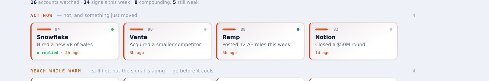
Signal Console
Antaeus
Private beta. Set up your workspace in an afternoon.
After that it reads your whole way of selling back to you every morning.
Banded by where your attention should go: act now, reach while they’re warm, emerging, or going cold.

Signal Console
Not a list of fourteen. The single most valuable one, with its reason shown.
Dashboard
Where a deal says it is matters less than what it is actually stuck on.
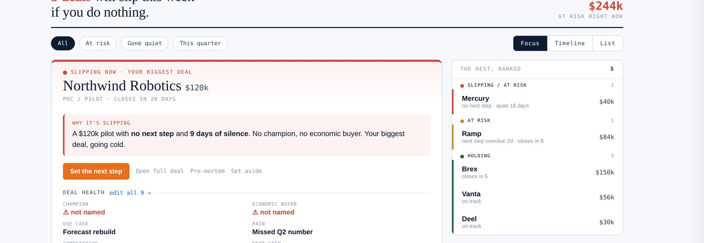
Deal Workspace
They say something. You tap what you heard. It hands you the next line.
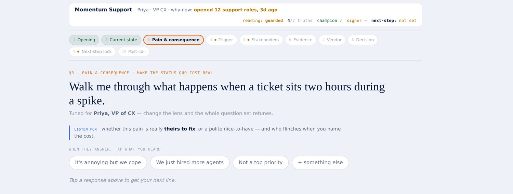
Discovery Studio
Walked through, one step at a time, with the people you need to pull in.
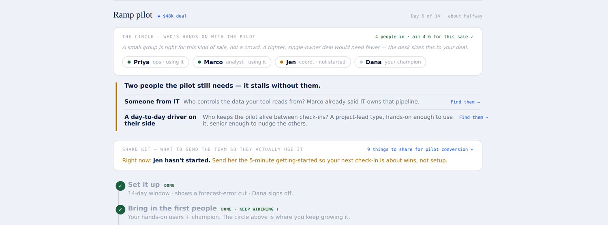
Pilot Desk
Written like a document a sharp operator left for their replacement.
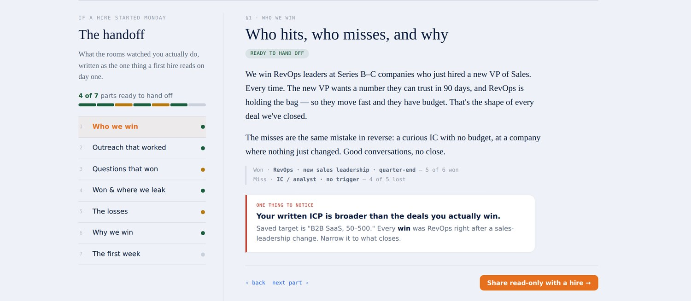
Founding GTM
Five states, and what it takes to reach the next one.
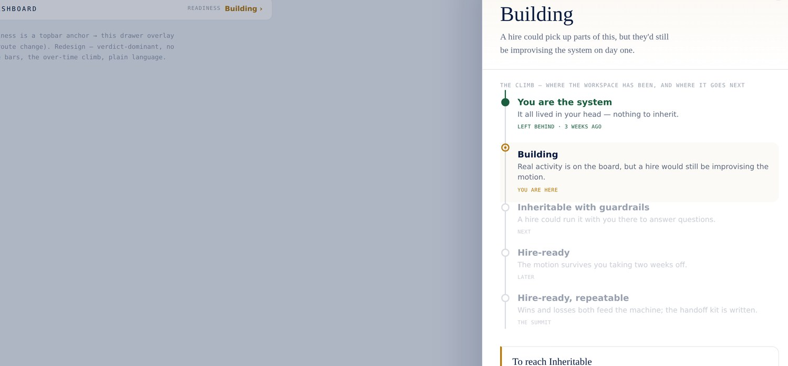
Readiness
The handoff
Your motion is the whole way you win revenue — who you go after, how you reach them, what you say on the call, how a deal gets to signed. In a founder-led company all of that lives in one head. Antaeus is where it stops doing that. The accounts you watch, where every deal actually stands, the questions that won a second meeting, what the pilot showed — it all piles up as you work, inside the rooms you already work in. Nothing gets filed away for later. So when the first serious hire starts, they open the same workspace you've been living in and read it themselves. You don't sit next to them for a month explaining what you meant.
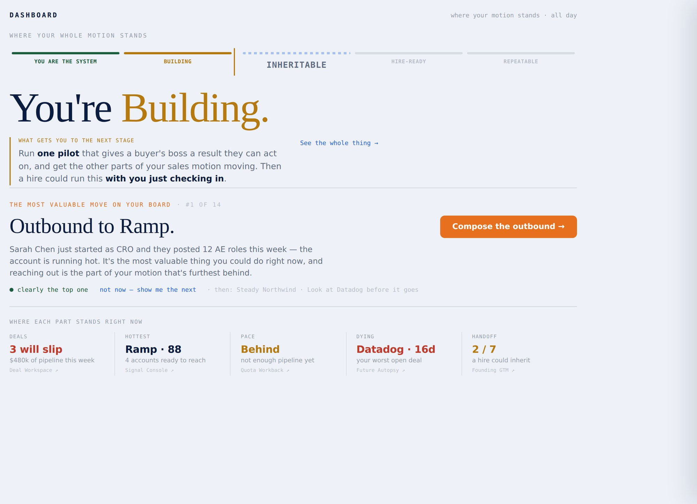
While you were out
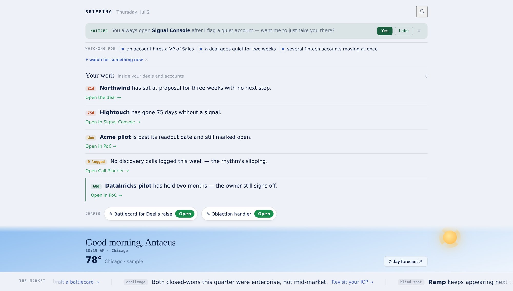
Every half hour the system goes back over your workspace on its own and writes down what it noticed — a deal that has not moved in three weeks, an account you watched that has gone quiet, a pilot sitting past the day it was meant to report. Not charts. Plain sentences, the way a colleague would say them to you. In the morning you get the short version and the one thing worth doing first, and the reason it came up first is right there next to it.
Every 30 minutesthe system re-reads your whole workspace on its own
One ranked movewith the plain reason it came up ahead of the other thirteen
22 rooms, one motionthe work carries between them — you never restate anything
However the week goes
Some mornings you have an hour and one call. Some weeks you are three deals behind and cannot tell which one is worth saving. The rooms hold their shape either way.
Monday, and it's all yours. Open one room and read the state of the whole motion in a sentence, then the single thing worth doing before lunch.
A call you're walking into cold. The shape of it, the pushback you're likely to get, and a line ready for each one — read before you dial, not during.
The deal that went quiet. The system noticed before you did, says how long it's been, and names the smallest thing that would move it.
What you learned on the call. Captured while you're still in it, then carried into the deal — so nobody has to ask you what happened later.
The week you're behind. It says so plainly — how far, which assumption was optimistic, and what it costs if you're wrong about it.
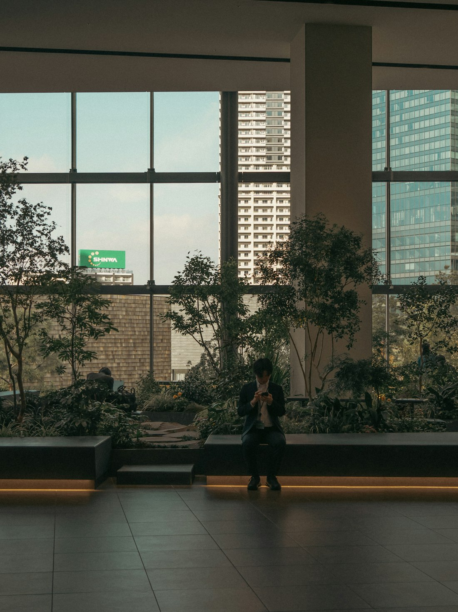
The day someone else takes it. They open the workspace and read it. You are in the room to answer questions, not to be the only copy.
Reaching out
Outreach that could have gone to anyone gets treated like it went to nobody. Antaeus will not let a line leave without the account, the person, and the thing that just happened to them attached to it. Same on the call: whatever the buyer says, there is a next line ready, and what you learn is captured while you are still in the room.
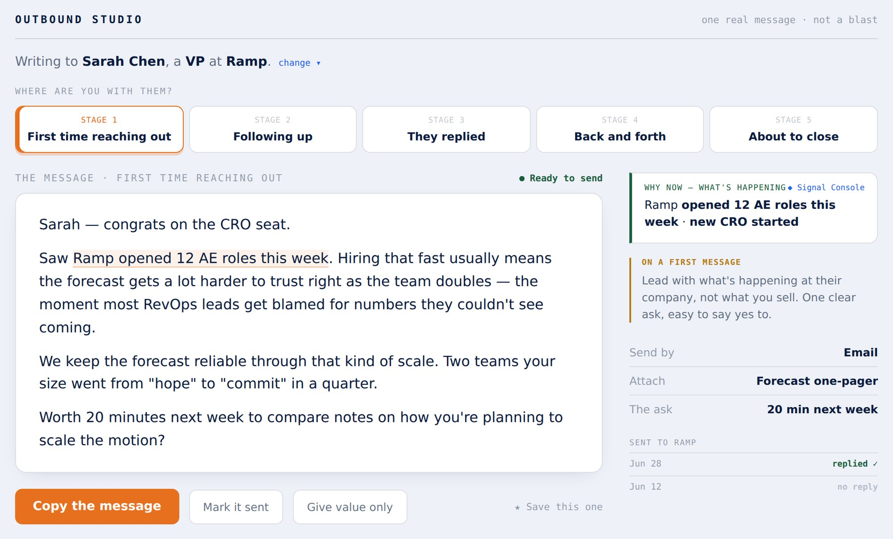
Outbound. Pick the account, the person, and what just happened to them. The line comes out naming all three. There is no send path for a message that could have gone to anyone.
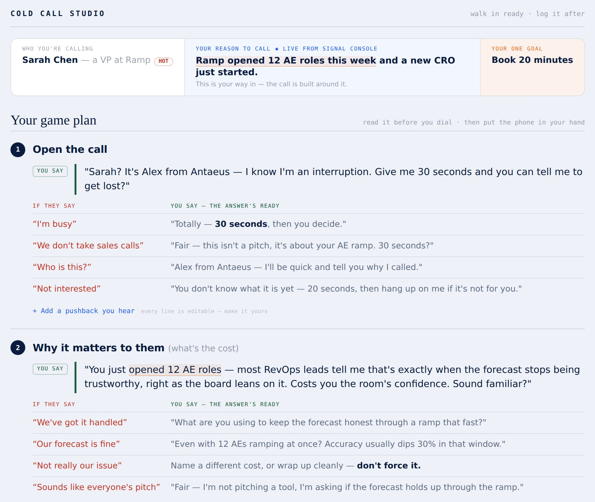
Cold call. The shape of the call, and at every step the pushback a buyer actually gives, with a line ready for it. You read it before you dial and log what happened after — never while you're talking.
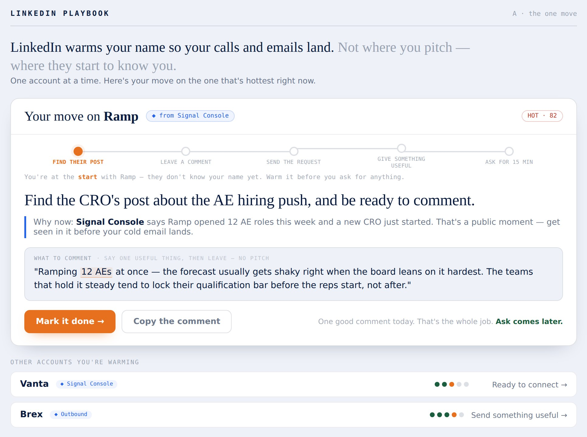
LinkedIn. One account, one move. Watch what they post, say something useful about it, connect once they know your name, give something before you ask. The inbox is never the opening.
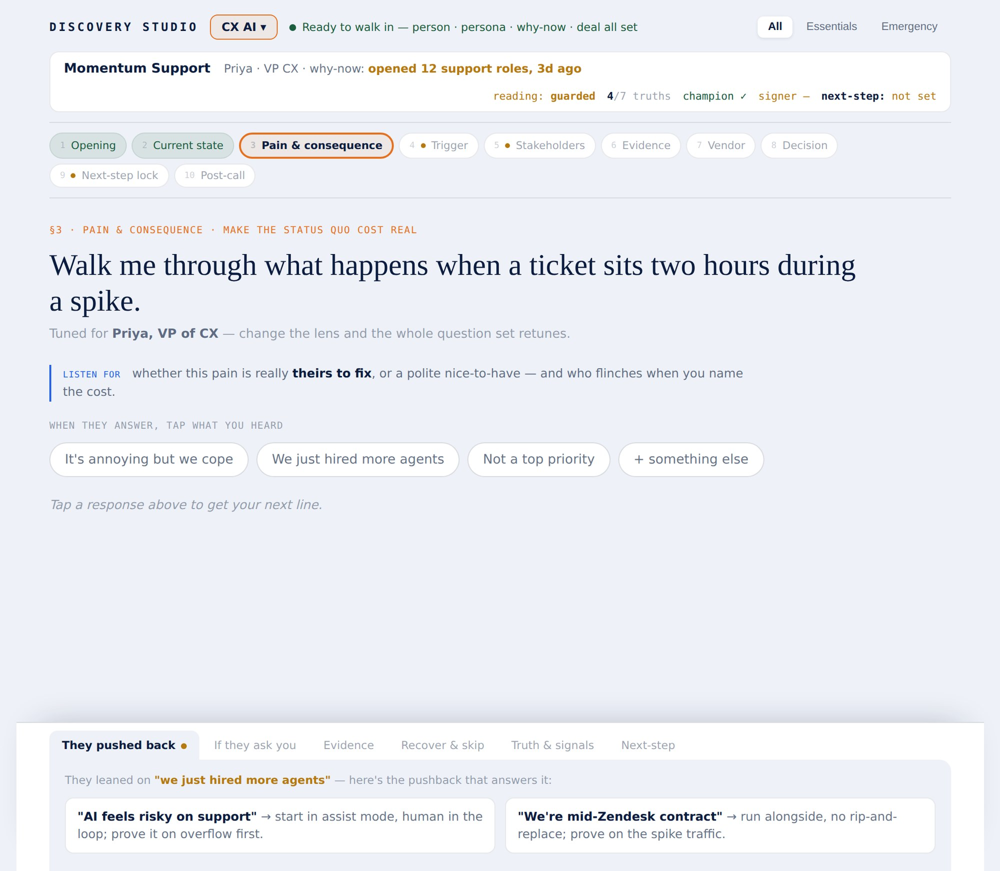
Discovery. A console you run the live call from. It shows the question, what to listen for, and the moment they answer you tap what you heard — it hands you the exact next line and jumps you to where the conversation went.
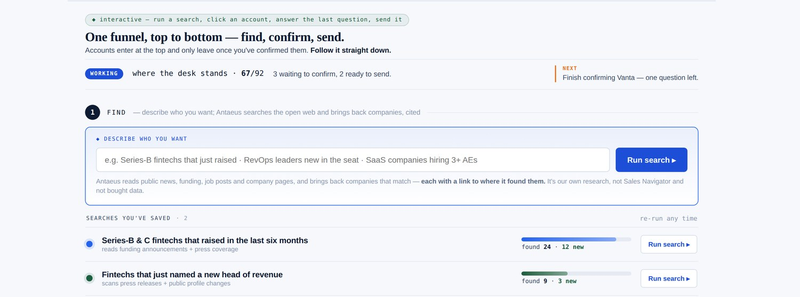
Finding them. Describe who you’re after in plain words and keep the search. Add the companies it turns up, and each one answers three questions — are they who we’re targeting, what’s our way in, how will we reach out — before it reaches the accounts you watch.
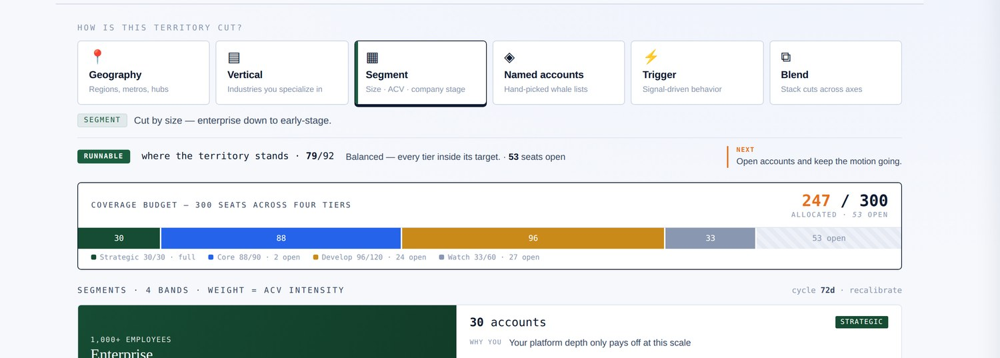
Carving the market. Cut it by geography, industry, size, named accounts, or a live trigger — and blend them. Every division says why you're the right team to win it.
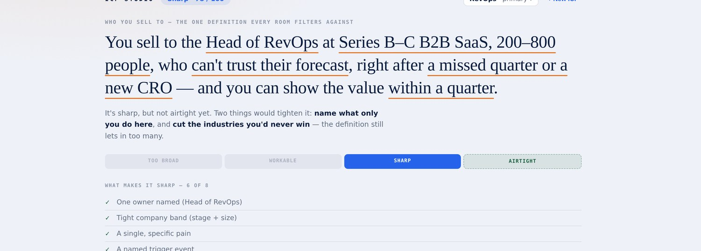
Who you sell to. One sharp definition, pushed on until it's a target you can actually hunt. Every other room works against it from then on.
Running the pilot. Walked through step by step: what it has to show, who needs to be hands-on, who's still missing, and a write-up the champion can defend without you.
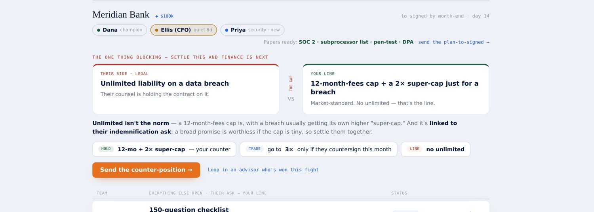
Getting to signed. After they say yes, security, legal and finance can still kill it. It leads with the one front actually blocking, their ask against your line, and what you can trade.
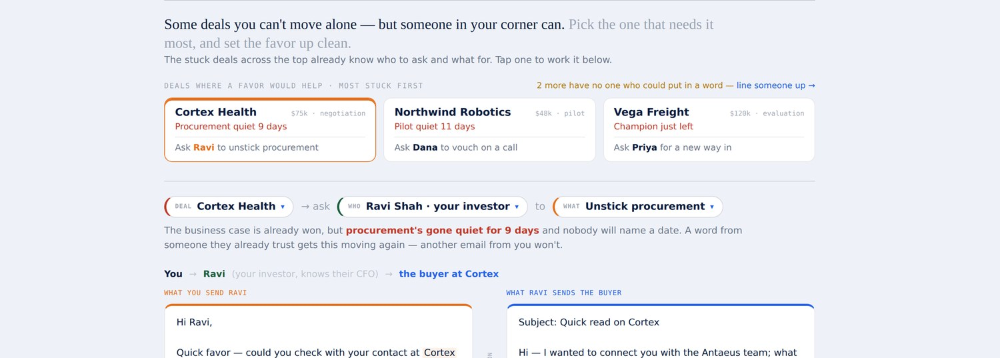
Calling in a favor. Your investors, advisors and happy customers, matched to the deal they can actually move. It writes both notes — yours to them, and the one they forward.
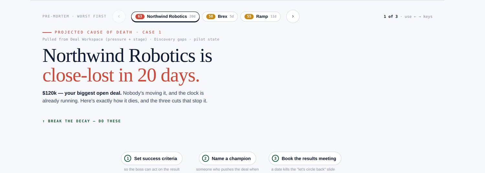
The autopsy, early. It writes the story of how the deal dies before it does, names the pattern, and routes you to the room where the fix happens.
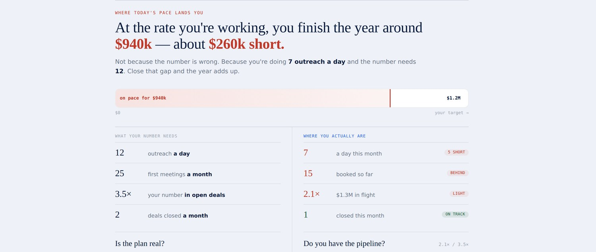
Your number, backwards. The annual figure worked down to what you do daily — plus whether the plan is even real, and which assumption in it is the optimistic one.
10 frameworksdiscovery question sets tuned to what you actually sell
6 buyer lensesthe questions change depending on who is in the room
Every branch answeredwhatever they say back, there is a next line and somewhere to go
Pace
Give it your number and Antaeus works backwards to the only thing you control — what you do every working day. Then it does the part most planning tools skip: it tells you whether the plan is realistic for deals your size, names the one assumption that's optimistic, and says what it costs you if that assumption is wrong.
1 in 5 closeshow often deals this size are won — the band is 15 to 25%
3.5× in flightenough going at once that a couple of slips do not sink the quarter
90 dayshow long one usually takes to close — the range is 60 to 120 days
These are the benchmark reads for that deal size. Antaeus checks your plan against them and says plainly when it's a stretch.
All of it
They are not tabs. Work done in one shows up in the next without you retyping it — the account you added this morning is the account the call is about this afternoon.
Getting around
There is no menu bar down the side of the screen. Every room stands on a quiet line at the foot of the page — press it, or press G, and the whole motion rises up as a map with you-are-here lit and the system's suggestion glowing. It's the myth the product is named after: Antaeus was unbeatable while he was touching the earth.
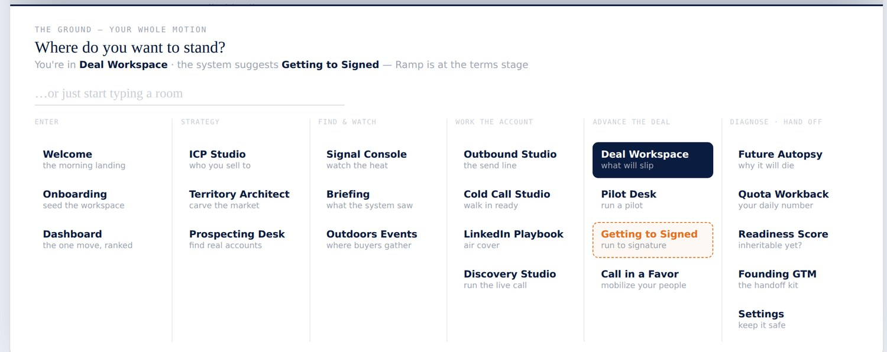
One line, every room. Press it and the map of your whole motion rises from beneath the page, with you-are-here lit and the system's suggestion glowing. Summoned, then gone — it never sits there taking up the screen.
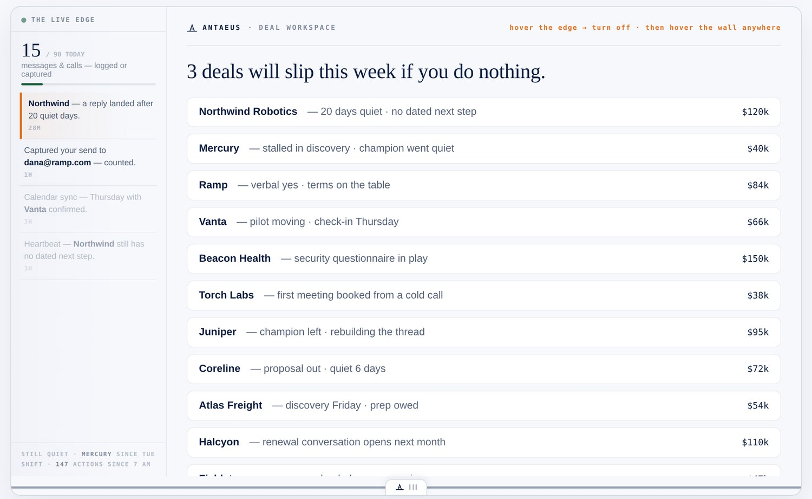
A hairline down the left margin carrying today's count against your daily number, and a running list of what moved — tagged by whether it was you, the system, or the buyer. Switch it off and it folds to the wall in three beats you can see.
Your workspace
Saved as you work. Your workspace lives in the cloud, not trapped on one laptop. Close the lid mid-sentence and open it somewhere else.
Nothing sold, nothing shared. Your accounts, deals and calls are your commercial position. They are not a dataset we resell or train a public model on.
Take a full copy, any time. One button in Settings downloads everything in your workspace as a plain file. No ticket, no export queue, no waiting on us.
Delete it and mean it. Type the words and it's gone — the accounts, the deals, the pilot results, all of it. Not archived somewhere we can still read.
Read-only for a hire. Share the workspace with someone who is starting Monday without handing them your logins or the ability to change anything.
An offline copy too. If you want a version that never leaves the machine you're on, Settings will hand you one. It's tucked away, because most people never need it.
One afternoon
The setup asks for the thinking only you have — who you really sell to, who you're chasing, where each deal is genuinely stuck. Nothing you'd have to look up. Everything a tool can find, it finds.
Create workspace ›Free in beta
We are building, not launching. While that's true it costs nothing, and we'd rather have your honest reaction than your credit card.
Create workspace ›Yours to take
One button, one file, everything in it. If you leave, you leave with the thing you built — not with a support ticket.
How your data works ›Built for the handoff
Every other tool is built to report on the motion. This one is built so the motion survives leaving your head.
Why Antaeus ›Most founders have already tried the other two. Here is the honest difference, without pretending either one is useless.
If you have a twelve-person sales team and a forecasting problem, buy a CRM. This is for the stretch before that, when the motion is still one person's and the first hire starts in six weeks.
Some rooms are deeper than others. When something is thin, the app says so in plain words rather than showing you a confident empty state. You will find rough edges; we would rather you find them than not be told.
Antaeus uses language models to read your workspace and draft what it hands you. It is not the pitch. Every line the system writes goes through the same voice rules the rest of the product does, and you can see what it based a read on.
No. A CRM stores what already happened so somebody can report on it. Antaeus ranks what should happen next and shows the reason it came up first. It also has none of the things a CRM is really bought for — territories, quotas across a team, admin roles, forecasting rollups. If those are your problem, this is not your tool.
An afternoon. It asks for three things only you know: who you really sell to, the companies you're chasing, and where each live deal genuinely stands — who your champion is, who signs, what it's stuck on. Ten live deals is the floor where the picture gets useful; fewer is allowed and the app tells you plainly that it stays thin.
Everything the app can look up — what a company does, how big it is, what just happened to them — it looks up itself. You are never typing something a tool could have found.
Because the part that matters cannot be imported. Why a deal is stuck, what made a win winnable, who actually decides — that lives in your head and nowhere else. We could hide that behind a friendly three-field form and give you something shallow, or ask for it once and give you a system that reads your motion back to you every morning afterwards. We chose the second and we say so up front instead of apologising for it.
The opposite. It is aimed at the stretch when the founder is still the one selling and the first serious go-to-market hire hasn't started yet or just did. If you already have a sales org, you have different problems and better-suited tools.
Most of them are a prettier database or a chat box bolted to one. The test to apply: open it on a Monday and see whether it tells you the single thing to do first and why that one and not the other thirteen. If it shows you a list and lets you choose, it is a database. Antaeus ranks, shows its reasoning, and lets you disagree with it.
No. It writes the line with you and you send it from wherever you already send mail. It can count what you sent — point it at your calendar and meetings get logged without you typing them twice. It never dials, and it will never take an action toward a buyer on its own.
It is one question answered honestly: could a person who starts Monday run this motion without you sitting next to them. Antaeus answers it with a state, not a score — from you are the system, through building and inheritable with you there to answer questions, up to hire-ready, and then hire-ready and repeatable once you have won and lost enough to see the pattern. Each state has conditions you can read, and the app says what it would take to reach the next one.
Yes, under the hood — to read your workspace, notice what moved, and draft what it hands you. It is not what we are selling. You are not buying a model; you are buying a system that ranks your revenue work and survives leaving your head. If the interesting part of a tool is which model it runs, it usually has nothing else.
It stays yours. Download the whole workspace as one file whenever you want, put a copy back, or delete everything behind a type-the-words confirmation. We do not sell it and we do not train public models on your accounts and deals.
Nothing while we're in beta, and no card to start. When there is a price it will be posted plainly on this page before it applies to anyone already using it.
One afternoon, and the workspace is awake. Tomorrow it hands you the first move.
Already have one? Sign in